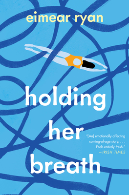

Current Reading Selection, 10 March 2022 to 20 May 2022: The Henna Artist, by Alka Joshi

Escaping from an abusive marriage, seventeen-year-old Lakshmi makes her way alone to the vibrant 1950s pink
city
of
Jaipur. There she becomes the most highly requested henna artist—and confidante—to the wealthy women of the
upper
class. But trusted with the secrets of the rich, she can never reveal her own…
Known for her original designs and sage advice, Lakshmi must tread carefully to avoid the jealous gossips who
could
ruin her reputation and her livelihood. As she pursues her dream of independent life, Lakshmi is startled when she
is
confronted by her husband. The latter has tracked her down these many years later with a high-spirited young girl
in
tow—a sister Lakshmi never knew of. Suddenly the caution that she has carefully cultivated as protection is
threatened. Still, she perseveres, applying her talents and lifting up those that surround her as she does.
Reading The Henna Artist is like travelling in a car that is going at just the right speed. At times, author
Alka
Joshi stops to point out sights and scenes on the way. At other times, she revs up the story and you find
yourself
on a thrilling ride to an unknown destination. And that is the best part. Just when you think you know where
you
are headed, Joshi takes a turn that leaves you completely in the lurch.
Upcoming Reading Selection, 27 May 2022: Holding Her Breath, by Eimear Ryan

A young woman comes of age in the shadow of her family's tragic past.
When Beth Crowe starts university, she is shadowed by the ghost of her potential as a competitive swimmer. Free to
create a fresh identity for herself, she finds herself among people who adore the poetry of her grandfather,
Benjamin
Crowe, who died tragically before she was born. So she embarks on a secret relationship and quest to discover the
truth about Benjamin and his widow, her beloved grandmother Lydia. The quest brings her into an archive that no
scholar has ever seen and to a person who knows things about her family that nobody else knows.
When Beth Crowe starts university, she is shadowed by the ghost of her potential as a competitive swimmer. Free to
create a fresh identity for herself, she finds herself among people who adore the poetry of her grandfather,
Benjamin Crowe, who died tragically before she was born. She embarks on a secret relationship - and on a quest to
discover the truth about Benjamin and his widow, her beloved grandmother Lydia. The quest brings her into an
archive that no scholar has ever seen, and to a person who knows things about her family that nobody else knows.
HOW IT WORKS??
We have created Inspiring Reads covering lifelong
learning, personal growth, novels and other books selected by our members. Books will include those written by
Trinity alumni, as well as Irish and International authors and will be selected by Inspiring Reads members. The
Inspiring Reads book club will connect through a private forum where all participants can discuss the current
book
and network with each other. Joining is completely free; you just have to get a copy of the book to enjoy. The
Inspiring Reads book club will read one book every two months so that you will have plenty of time for each
book.
Explore different book types
Now that you know more about the different types of genres, you can continue exploring other works of fiction and
nonfiction. You may even find a new favorite! If you can’t choose one favorite genre to read, consider reading short
stories or an anthology. You might even want to crack open a novella or crack up at some book puns.
want to read more...!
why late?
find more books here and love reading them.....